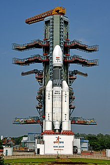
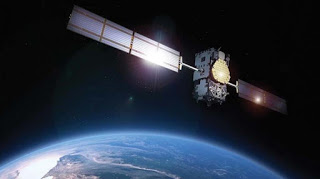

The Indian Space Research Organisation (ISRO, /ˈɪsroʊ/; Hindi: Bhārtīya
Antrikṣa Anusandhān Saṅgaṭhan) is the space agency of the Government of
India and has its headquarters in the city of Bangalore (also known as
Bengaluru). Its vision is to "harness space technology for national
development while pursuing space science research & planetary
exploration".[6] The Indian National Committee for Space Research
(INCOSPAR) was established by Jawaharlal Nehru under the Department of
Atomic Energy (DAE) in 1962, with the urging of scientist Vikram
Sarabhai recognising the need in space research. INCOSPAR grew and
became ISRO in 1969, also under the DAE. In 1972, the Government of
India had set up a Space Commission and the Department of Space (DOS),
bringing ISRO under the DOS. The establishment of ISRO thus
institutionalised space research activities in India. It is managed by
the DOS, which reports to the Prime Minister of India
FORMATIVE YEARS

ISRO sent a lunar orbiter, Chandrayaan-1, on 22 October 2008, which
discovered lunar water in the form of ice,[21] and the Mars Orbiter
Mission, on 5 November 2013, which entered Mars orbit on 24 September
2014, making India the first nation to succeed on its maiden attempt to
Mars, as well as the first space agency in Asia to reach Mars orbit.[22]
On 18 June 2016, ISRO launched twenty satellites in a single
vehicle,[23] and on 15 February 2017, ISRO launched one hundred and four
satellites in a single rocket (PSLV-C37), a world record.[24][25] ISRO
launched its heaviest rocket, Geosynchronous Satellite Launch
Vehicle-Mark III (GSLV-Mk III), on 5 June 2017 and placed a
communications satellite GSAT-19 in orbit. With this launch, ISRO became
capable of launching 4-tonne heavy satellites into GTO. On 22 July 2019,
ISRO launched its second lunar mission Chandrayaan-2 to study the lunar
geology and the distribution of lunar water.